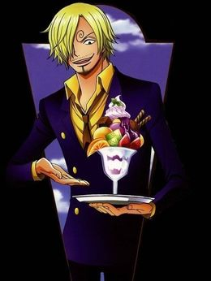
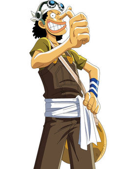

| 网站首页 | TV版目录 | 角色资料 | 精选壁纸 | 衍生作品 | 果实大全 | 海贼论坛 | 关于我 |
|---|
莫奇·D·路飞
草帽海贼团船长。革命家蒙奇·D·龙的儿子，前海军中将蒙奇·D·卡普的孙子。特征是“草帽”、以及眼下那道代表勇气的刀疤（自己用刀划的），草帽是四皇“红发”香克斯委托保管的，故常被称为“草帽小子路飞”。梦想是完成对香克斯的承诺，找到传说中的ONE PIECE，成为海贼王。
演员演技评分：9.5分
演员印象： 仗义(625) | 吃货(308) | 重情谊(146) |
奈美
草帽海贼团的航海士。特征是橘色的短发（两年后为波浪长发）和左肩的刺青（风车与橘子的图案）。使用棍术，现在武器为“魔法天候棒”。精通气象学和航海术，擅长偷术，用身体感知天气，完美指示航路，是个能精确画出航海图的天才航海士。喜欢的东西是钱和橘子，梦想是要画出全世界的地图。
演员演技评分：9.2分
演员印象： $_$(263) | 聪明(68) | 女神(49) |
罗洛亚‧卓洛
“草帽一伙”中的战斗员，也可以称得上是海贼团的“副船长”，同时也是悬赏过亿武艺高强的三刀流剑士，能够自由操纵三把刀战斗。爱喝酒，没事就睡觉，讲义气，超级大路痴。为了小时候与挚友的约定而踏上了前往世界第一剑士的道路，随后成为主角路飞的第一个伙伴。在初次败给世界第一剑士“鹰眼”后向路飞发誓永不再败，并且更加努力的锻炼自己。两年后的他成功与伙伴们汇合，并且为了实现自己的梦想，奔赴强者如云的新世界。
演员演技评分：9.0分
演员印象： 超帅(214) | 呆萌霸气～(139) | 最强剑士(67) |

山治
草帽海贼团厨师，金发，有着卷曲眉毛，永远遮住半边脸的家伙，香烟不离口，最爱女人，很花心但很有风度，海贼中的绅士。小时候跟随大海贼红脚·哲夫学习厨艺。踢技以快准狠被海军称之为“黑足”，但从不愿意伤害任何的女性，哪怕是敌人。在经过司法岛一战后也成了悬赏对象，首次悬赏就有7700万之高。梦想是找到传说之海All Blue而跟随路飞一同进入了伟大航路。
演员演技评分：9.1分
演员印象： 绅士帅气暖男(229) | 色厨师(65) | 帅气(30) |

乌索普
草帽海贼团狙击手，特征为头戴狙击防风镜、浅啡色头巾，长鼻子。小时候是出名的吹牛大王，和村里的几个孩子组成“乌索普海贼团”，自称乌索普船长。发现克洛船长的阴谋后，立志要保护村里的人，和路飞并肩作战。梦想是要成为勇敢的海上战士。
演员演技评分：8.6分
演员印象： 勇敢(126) | 仗义(73) | 最后爆发型(45) |
波德卡斯‧D‧艾斯
主角路飞的哥哥（义兄），海贼王哥尔·D·罗杰的儿子。白胡子海贼团第二队队长，曾被邀请加入七武海，但是被艾斯拒绝。后被黑胡子击败，并且交与海军，关押在深海大监狱
演员演技评分：9.8分
演员印象： 实力很强(341) | 希望复活(336) | 帅(123) |
草帽一伙
1、蒙奇·D·路飞【声优bai】：田中真弓
“草帽”蒙奇·D·路飞。
超人系橡胶果实拥有者，
他的梦想是找到传说中的ONE PIECE，成为海贼王，性格积极乐观，爱憎分明且十分重视伙伴，
对任何危险的事物都超感兴趣。看似白痴，却是一个大智若愚型的无愧船长之职的人。
2、罗罗诺亚·索隆【声优】：中井和哉
“海贼猎人”罗罗诺亚·索隆。
爱喝酒，爱睡觉，讲义气，海贼第一超级大路痴。原本是东海海贼赏金猎人，为了小时候与挚友的约定而踏上
了前往世界第一剑士的道路，随后成为路飞出海后遇到的第一个伙伴。
3、娜美【声优】：冈村明美
“小贼猫”娜美。
头脑聪明又机灵，精通气象学和航海术，擅长偷术，能用身体感知天气，完美指示航路，是个能精确画出航海图的天才航海士。
最喜欢钱和橘子，梦想是要画出全世界的地图。
4、乌索普【声优】：山口胜平
“GOD”乌索普。
特征为头戴狙击防风镜、浅啡色头巾，长鼻子。先前武器为弹弓“dao银河小弹珠”，后武器为提高了攻击性和准确度的独角仙弹弓，
并用空岛的各种贝进行了强化。梦想是要成为勇敢的海上战士。
5、山治【声优】：平田广明
“黑足”山治。
金发，有着卷曲眉毛，永远遮住半边脸的家伙，香烟不离口，最爱女人，很花心但很有风度，
海贼中的绅士。小时候跟随大海贼红脚哲普学习厨艺。梦想是找到传说之海All Blue而跟随路飞一同进入了伟大航路。
6、托尼托尼·乔巴【声优】：大谷育江
“爱吃棉花糖的驯鹿”托尼托尼·乔巴。
原为磁鼓岛Dr.库蕾哈医生最宠爱的驯鹿兼医疗助手。乔巴的特征是蓝色的鼻子和一顶画有“X”标记的粉红色帽子
是草帽海贼团年龄最小的成员。人兽型的姿态下，则是伙伴中身材最矮小的成员。
7、妮可·罗宾【声优】： 山口由里子
“恶魔之子”妮可·罗宾。
超人系▪花花果实拥有者。个性冷静，擅长考古学以及暗杀，学识渊博，对于世界政府、海盗、航海一事都知道的很详细。
目标是找到真正的历史正文，绝不饶恕践踏历史文物的人。
8、弗兰奇【声优】：矢尾一树
“改造人”弗兰奇。
性格豪放，喜欢唱歌，跳奇怪的舞，下身喜欢只穿一条短裤。身为改造人的弗兰奇，身体藏着各种兵器。
弗兰奇本来是想制造出梦想之船，但“桑尼号”完成后，只想看到自己制造的船能到达世界尽头。
9、布鲁克【声优】：长岛雄一
“鼻歌”&“灵魂之王”布鲁克。
超人系▪黄泉果实拥有者。原本是某国护卫队团长，后加入伦巴海贼团，50年前跟鲸鱼拉布约定在“双子峡”重逢。
以骷髅状态生存。为了履行和拉布的约定，才正式加入草帽海贼团。